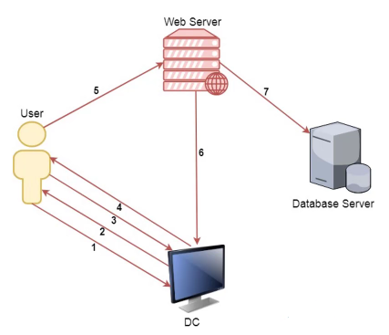

# Kerberos Delegation
Kerberos Delegation allows for the resuse of end-user credentials to access resources hosted on a different server.
It's typically used in multi-tier services.
For example:
• A user authenticates to a web server
• The web server makes requests to a database on a seperate server
◇ with delegation, the web server can request access to resources on the database server AS the user (not the web server account)
The interesting part of delegation from an attacker perspective is that we can impersonate users.
## Delegation Types
Unconstrained Delegation is where the first-hop server (e.g. web server) can request to ANY service on the domain.
Constrained Delegationis where the first-hop server (e.g .web server) can only request access to SPECIFIC services on the domain.
## How Kerberos Delegation Works
1. A user provides credentials to the domain controller
2. Kerberos authentication on the the domain controller returns a TGT
3. The user requests a TGS to access a web server
4. Keberos authentctation on the domain controller serves the TGS
5. The hser sends their TGT and TGS and accesses/logs in to the web server
6. The web server service account uses the user's TGT and TGS to request a TGS to access the datbase
7. Kerberos authentication on the domain controller provides a TGS to the web server
8. The web server connects to the database server as the user (not the web server service account)
